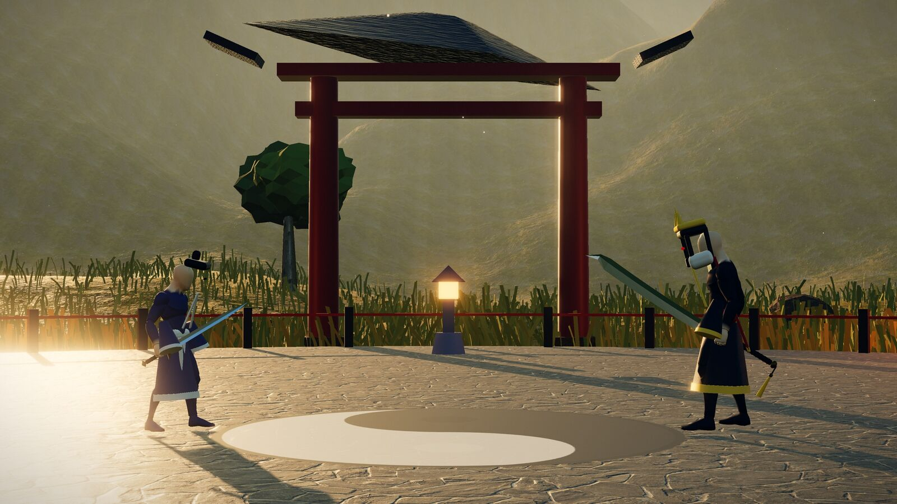

Game · In development
HOLLOW — Path of the Sword
A 3D sword-duelling game built around stamina, stances and reading your opponent. Toon-shaded, built in Godot 4.
- Three stances. Heaven, Man and Earth, each with clear strengths and weaknesses.
- Stamina first. Recover stamina with well-timed guards; run dry and you stagger.
- AI duelists. Opponents that switch stances, feint and punish mistakes.